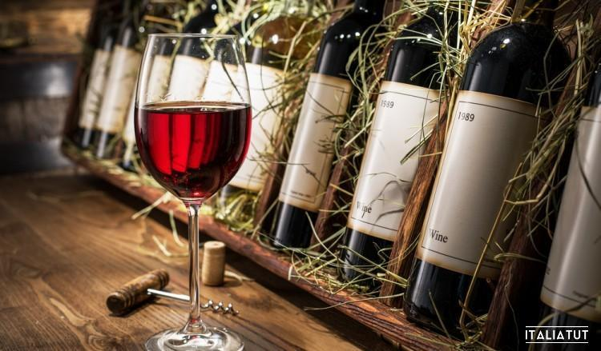

Опубликован список самых продаваемых итальянских вин

Обнародованы результаты исследования о продажах итальянских вин, которое будет представлено на международной винной выставке "Vinitaly". 15 апреля в Вероне начинается 52-я по счету международная выставка вин и спиртных напитков "Vinitaly", которая продлится до 18 апреля. Специально к этому событию исследовательская группа "Iri" подготовила подробный отчет о продажах итальянских вин в супермаркетах, гипермаркетах и дискаунтерах, где в 2017 году было продано 648 миллионов литров вина на сумму в почти два миллиарда евро.
Если говорить в общих чертах, итальянцы покупают все меньше вин в бриках, отдавая предпочтение бутылкам. Популярность игристых вин продолжает набирать обороты, как в Италии (+4,9% в годовом исчислении), так и за рубежом.
Самым популярным вином, которое можно найти на полках местных супермаркетов в 2017 году, снова становится Ламбруско (объем годовых продаж - 13,12 миллиона литров), за ним следуют Кьянти (13,10 миллиона литров, + 8,5% за год) и Монтепульчано д'Абруццо (8,4 миллиона литров).Среди белых вин на первом месте в списке бестселлеров разместилось Шардоне (7,8 миллиона литров).Среди региональных марок наиболее возросли продажи сицилийского Грилло (+ 22,8%) и апулийского Примитиво (+ 20,5%).Среди вин "new-entry" побеждает "Ortrugo" из Эмилии-Романьи, продажи которого выросли на 18,8%.За ним следуют фриуланская Ribolla, Ripasso della Valpolicella, Cortese del Piemonte и Passerina marchigiana. Исследование отмечает, что итальянцы готовы платить за качественные региональные вина DOC и DOGG более высокие цифры.